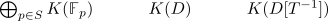

algebraic k-theory - K-Theory of categories
Aspects
- k-theory of schemes as right kan extension
5.1)
- pointed category
- preadditive infinity-category
- additive infinity category
- stable
- reduced infinity functor
- additive infinity functor
- exact infinity functor /
- infinity category of additive categories
- category cat stable
- Cat Ex
5.2)
5.3)
5.4)
5.5)
- waldhausen infinity category
- exact functor between waldhausen infinity categories
- category of waldhausen categories
- fully faithful inclusion of Cat Ex into waldhausen categories
5.6)
5.7)
- stable infinity categories as exact category with maximal exact structure
- inclusion of Cat Stable into Cat Ex
5.8)
- minimal exact structure functor from additive to stable
- minimal exact structure of an additive category
- category of additive categories as bousfield colocalization of Cat Ex
5.9)
- 1 categorical stable infinity category as point
- exact category
- fully faithful inclusion of exact 1 categories to Cat Ex
5.10)
- cofiber condition for a pushout of injections in an exact infinity category
- square with parallel injections as pullback in an exact infinity category
- generalized shear map as equivalence in an additive category
- pullback in an additive category and fiber
5.11)
- exact infinity functor preserves pushouts along an inclusion
- exact infinity functor preserves pullbacks along a projection
5.12)
5.13)
- abelian category as exact category
- category of quasi coherent sheaves of modules
- category of quasi coherent sheaves of modules as abelian category
5.14)
- stable infinity categories as exact category with maximal exact structure
- category of Spectra
- category of k-modules
- infinity derived category of a grothendieck category as stable infinity category
- perfect object ???
- category of perfect objects ???
- category of perfect modules
- qcqs scheme
- derived category of a qcqs scheme
- functor category for a stable infinity category as stable infinity categories
5.15)
- twisted arrow cosimplicial category
- category of spans for an exact infinity category
- Q construction of an exact infinity category
- span category functor
5.16)
-
5.17)
5.18)
- K space functor preserves filtered colimits
- K space functor from Cat Ex
- K space functor from Cat ex preserves finite products
- commutative cartesian monoids in a preadditive category
- exact structure of an abelian category
5.19)
5.20)
5.21)
5.22)
5.23)
5.24)
5.25)
5.27)
5.28)
5.29)
5.30)
5.31)
- S equals group completion theorem
- S construction as segal anima and minimal exact structure
- S equals Q
5.31)
5.32)
5.33)
5.34)
5.35)
- k0 of an exact category
- pi_1 of a realization of a simplicial Anima with contractible zero simplices
5.36)
- Quillens Theorem A
- cofinal map induces homotopy equivalence on total dwyer-kan localizations
- cofinal map induces equivalence on geometric realization
- coinitial infinity functor as weak equivalence
5.3 Resolutions
5.37)
5.38)
5.40)
- category of finitely presented modules of projective dimension at most n
- category of finitely presented modules of bounded projective dimension
5.41)
5.42)
5.43)
5.44)
5.45)
5.46)
5.47)
5.4) devisage
5.48)
5.49)
5.50)
- simple object
- k-theory abelian category with each object admitting finite filtration with quotient as simple objects
5.51)
5.52)
- serre subcategory - weak serre subcategory
- weak serre subcategory as exact abelian subcategory
- localization by a serre subcategory
Let $\mathcal{A}$ be an abelian category and $B$ a subcategory closed under
5.53)
Let $\mathcal{D}$ be a dedekind domain and $T$ a <mult closed subset>. Then there exists a fiber sequence

5.54)
5.55)
5.56)
5.57)
5.58)
- fiber sequence of connective k spaces of integers and fields
- K theory of Fp and p-power torsion groups coincide
- K-theory of finite fields
- K-Theory of a number field
- quotient of an E infinity group by n
5.59)
5.60)
5.5 K-theory of stable categories
5.61)
- category cat stable is bicomplete
- category cat stable is pointed
- category cat stable admits fibers
- category cat stable admits cofibers
5.62)
a) additive
- product preserving functors out of an additive category into a stable category as stable category
- stabilization of additive categories
b) exact
- stabilization of an exact category
- category cat stable as bousfield localization of exact categories
- unit of stabilization as fully faithful functor
- exact structure determined by stabilization
5.63)
- spanier whitehead stabilization of prestable categories
- stabilization of an exact category via left exact functors
- prestable infinity category
5.64)
- essential image of additive stabilization as categories with bounded weight structure
- essential image of exact stabilization as categories with bounded heart structure
5.65)
5.66)
5.67)
- left-special inclusion
- left-special inclusion induces fully faithful functor on stabilization
- resolving functor as left-special functor
5.68)
5.69)
- verdier sequence
- verdier injection / verdier projection
- split verdier sequence
- splitting lemma of verdier sequences
- <verdier quotient>
- bousfield localization /
- right bousfield localization / left bousfield localization
5.70)
5.71)
- localization theorem of stable connective k-space
- additivity of the stable connective k-space functor
- verdier localization
5.72)
5.73)
5.74)
5.75)
5.76)
- realization of the span functor sends split verdier sequences to fiber sequences
- right split verdier sequence
- left split verdier sequence
- splitting lemma of verdier sequences
5.77)
5.78)
5.79)
- Ind criterion for a verdier sequence of small, stable categories
- verdier sequence
5.80)
5.81)
5.82)
- upper t-subcategory of a stable infinity category as right bousfield localization
- lower t-subcategory of a stable infinity category as left bousfield localization
5.83)
5.84)
- standard t-structure of modules over a ring spectrum
- standard t-structure of modules over a connective ring spectrum
5.85)
5.86)
5.87)
- todo:
5.88)
5.89)
5.90)
5.91)
5.92)
5.93)
5.94)
- fundamental theorem of connective k-theory
- NK(R) of a regular coherent ring
- NK(R) of a ring
- connective K-theory of the laurent ring of a regular coherent ring
5.95)
- map to polynomial ring as equivalence on connective k-theory for a regular coherent ring
- NK(R) of a regular coherent ring
- connective K-theory of the laurent ring of a regular coherent ring